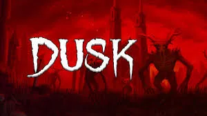

Dusk, David Szymanski'nin yaptığı, 90'lar tarzı hızlı bir retro FPS. Oyun 3 bölümden oluşuyor: kırsal alanlar, askeri tesisler ve yeraltındaki karanlık şehir. Toplamda 30+ bölüm var ve çoğunda keşfedilecek gizli alanlar, ekstra silahlar ve küçük sürprizler bulunuyor. Haritalar genelde doğrusal gibi başlasa da, dikkatli oynarsan farklı yollar ve kısayollar keşfedebiliyorsun. Oynanış Doom ve Quake gibi hızlı ve akıcı. Slide (kayma) mekaniği ve çift silah kullanımı oyuna ekstra tempo katıyor, özellikle shotgun'lar ve yakın mesafe çatışmaları oldukça tatmin edici. Düşmanlar agresif olduğu için sürekli hareket halinde kalman gerekiyor.
SİSTEM GEREKSİNİMLERİ
Minimum
- OS: Windows 7 / 8 / 10
- İşlemci: 2.4 GHz çift çekirdek
- RAM: 2 GB
- Ekran Kartı: GeForce 9800GT
- Disk: 500 MB
Önerilen
- OS: Windows 10 / 11
- İşlemci: 2.4 GHz dört çekirdek
- RAM: 4 GB
- Ekran Kartı: GTX 460
- Disk: 2 GB
LİNKLER
RESMİ İNDİRME LİNKLERİ
BENZER OYUNLAR
Dusk Nedir?
Dusk, David Szymanski tarafından geliştirilen ve 90'ların klasik FPS oyunlarından ilham alan hızlı tempolu bir retro shooter’dır. Doom, Quake ve Blood gibi eski tarz oyunların hissini modern oynanışla birleştirir. Oyuncu, karanlık bir kırsal bölgede başlayan ve giderek daha tuhaf ve korkutucu yerlere ilerleyen bir maceraya atılır.
Oyun 3 ana bölümden oluşur: Episode 1 (The Foothills) kırsal alanlar ve madenleri, Episode 2 (The Facilities) askeri tesisler ve laboratuvarları, Episode 3 (The Nameless City) ise daha soyut ve korku ağırlıklı bir yeraltı şehrini içerir. Toplamda 30’dan fazla bölüm bulunur ve çoğunda keşfedilecek gizli alanlar, silahlar ve sırlar vardır.
Oynanış Özellikleri
- Hızlı, akıcı ve refleks odaklı klasik FPS oynanışı.
- Slide (kayma) mekaniği ile daha dinamik hareket imkanı.
- Çift silah kullanabilme (dual wield) sistemi.
- Farklı ortamlarda geçen 30+ bölüm ve bol miktarda gizli alan.
- Retro tarz grafikler ama modern akıcılık ve kontrol hissi.
- Atmosfere büyük katkı sağlayan güçlü müzikler.
Oyun Deneyimi
Dusk, oyuncuya sürekli hareket halinde kalmayı teşvik eden bir yapı sunar. Düşmanlar hızlıdır, haritalar karmaşıktır ve çoğu zaman reflekslerinizi zorlar. Silah hissi oldukça tatmin edicidir; özellikle shotgun ve çift silah kullanımı oyunun en keyifli yanlarından biridir.
Ancak bazı bölümlerde yön bulmak zor olabilir. Özellikle ikinci bölümde haritalar daha karmaşık hale gelir ve kaybolma ihtimali artar. Bu da oyuna eski tarz bir zorluk hissi katarken, bazı oyuncular için zorlayıcı olabilir.
Oyun Süresi ve Modlar
Dusk’ın ana hikayesi ortalama 8-10 saat sürer. Tüm gizli alanları ve sırları keşfetmek isterseniz bu süre 15 saate kadar çıkabilir. Oyunu bitirdikten sonra açılan Endless Survival Mode ile dalga dalga düşmanlara karşı ne kadar dayanabileceğinizi test edebilirsiniz.
VİRÜS TARAMASI SONUÇLARI
Dusk adlı oyun kapsamlı bir virüs taramasından geçirilmiştir: Taranan dosya sayısı: 200+ Bulunan zararlı yazılım: 0 Güvenle oynayabilirsiniz.
Dusk İpuçları ve Tavsiyeler
Dusk’ta sürekli hareket etmek hayatta kalmanın en önemli kuralıdır. Sabit kalmak çoğu zaman hızlı ölmenize neden olur. Haritaları dikkatlice keşfetmek, gizli silahları ve alanları bulmanızı sağlar. Ayrıca düşmanları tek tek temizlemek yerine hızlı ve agresif oynamak genellikle daha avantajlıdır.
Oyunun atmosferini tam anlamıyla yaşamak için müzikleri açık oynamanız önerilir. Hem tempo hem de ortam hissi açısından müzikler oyuna büyük katkı sağlar.